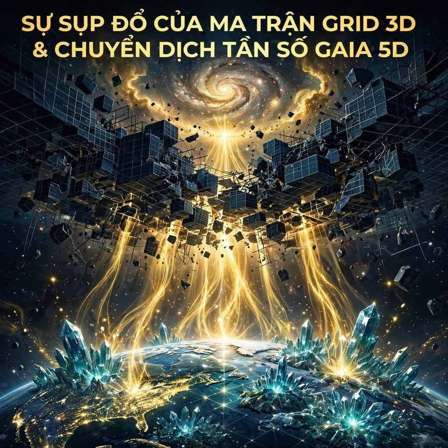
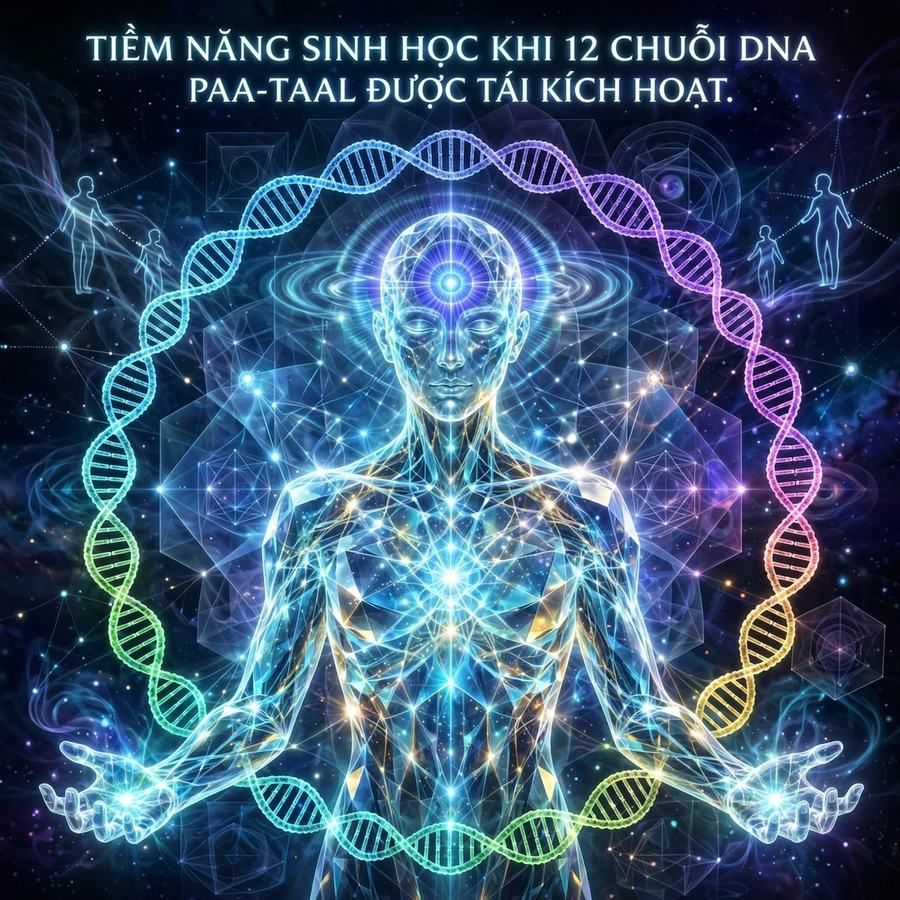
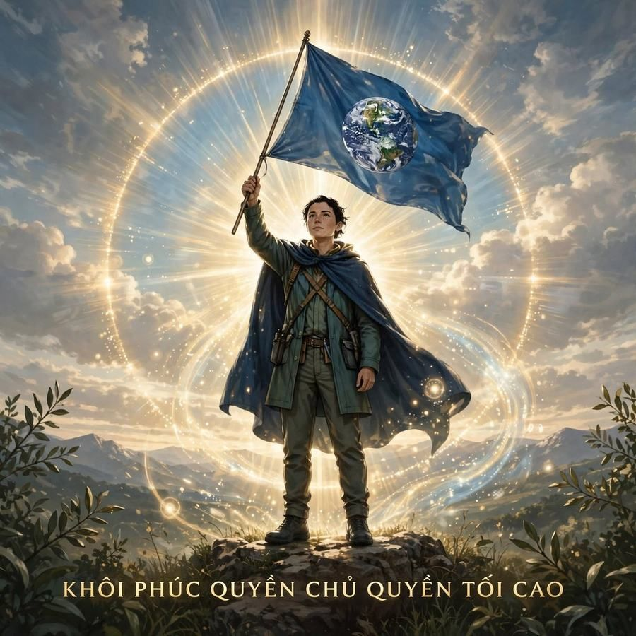
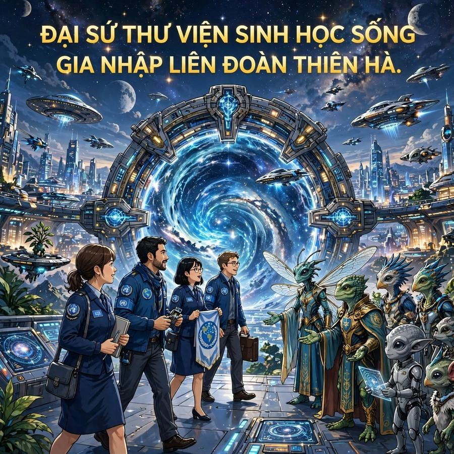
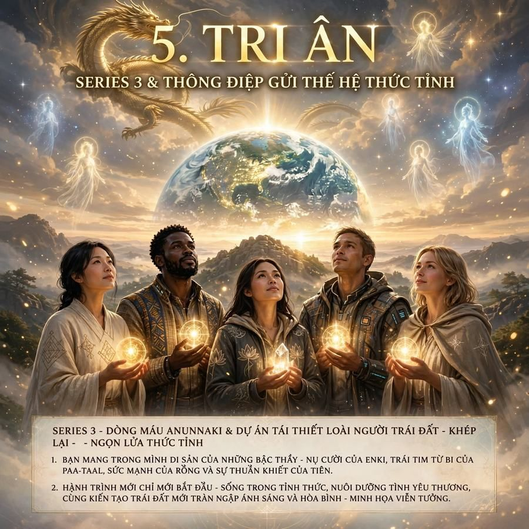

Trang chủ / Chuyên đề 3: Dòng Máu Anunnaki / Kỳ 30
Chuyên đề 3 · Kỳ 30 / 90
TƯƠNG LAI RỰC RỠ CỦA LOÀI NGƯỜI TRÁI ĐẤT KHI DI SẢN ENKI ĐƯỢC GIẢI PHÓNG TRỌN VẸN

Vậy là hành trình 10 kỳ của chuyên đề 3: Dòng Máu Anunnaki, Enki & Dự Án Tái Thiết Loài Người Trái Đất đã chính thức bước vào chặng đường khép lại.
Qua 9 kỳ vừa rồi, chúng ta đã cùng nhau giải mã nguồn gốc siêu chiến hạm Nibiru, dòng di truyền lai Sirius B - Orion của bộ tộc Anunnaki, cuộc đối đầu triết lý giữa Enki và Enlil, độc chiêu cài đặt mã gen 12 chuỗi Paa-Taal cùng Luân Xa Tim trên Adamu, các vụ nổ hạt nhân tại Bán đảo Sinai, ma trận phong tỏa 3D, sự vạch trần tâm linh Marduk tại Babylon, sự trở lại của Liên Minh Các Đấng Sáng Lập (Seeders) cùng các con tàu Space Arks, và bí mật kích hoạt bộ gen Con Rồng Cháu Tiên ngay trong Tuyến Tùng của chính bạn.
Và giờ đây, khi cánh cửa của Ma trận 3D đang từng bước làm sụp đổ hoàn toàn, một viễn cảnh tương lai rực rỡ nhất trong lịch sử Đa Vũ trụ đang chính thức mở ra cho nhân loại Trái Đất!
Điều gì sẽ xảy ra khi dải tần số 5D thẩm thấu trọn vẹn và di sản di truyền Enki được giải phóng 100%? Khi 12 chuỗi DNA được kích hoạt, con người sẽ sở hữu những tiềm năng sinh học siêu việt ra sao? Vị thế Chủ Quyền Tối Cao của Trái Đất được khôi phục như thế nào khi chúng ta chính thức bước lên ngai vị đại sứ đại diện cho Thư viện Sinh học Sống gia nhập Liên Đoàn Thế Giới Thiên Hà?
Hãy cùng dấn thân vào Kỳ 10 (Kỳ Cuối): Tương Lai Rực Rỡ Của Loài Người Trái Đất Khi Di Sản Enki Được Giải Phóng Trọn Vẹn để chiêm ngưỡng bức tranh hoàn lương vĩ đại nhất của nhân loại!
✦ ✦ ✦1. SỰ SỤP ĐỔ CỦA MA TRẬN GRID 3D & BẢO CÁO CHUYỂN DỊCH TẦN SỐ GAIA 5D
Chuyến hải trình chuyển giao kỷ nguyên của Trái Đất không còn là một lý thuyết xa xôi, mà đang diễn ra trực tiếp dưới sự tác động của dải năng lượng vũ trụ cao tần.
A. Sóng Gamma Từ Trung Tâm Ngân Hà Xé Rách Lưới Phong Tỏa
- Dải Năng Lượng Vũ Trụ Siêu Cao: Hệ Mặt Trời của chúng ta đã đi sâu vào vùng không gian ngập tràn chùm sóng Gamma năng lượng cao (Photon Belt / Galactical Core Energy). Dải xung này liên tục dội xuống Trái Đất, làm rung chuyển và làm tan chảy từng mắt lưới của ma trận phong tỏa tần số 3D.
- Sự Sụp Đổ Của Các Cấu Trúc Thao Túng: Các hệ thống kiểm soát dựa trên sự sợ hãi, nợ nần, chia rẽ và chiến nhân tạo đang mất đi dải tần số nuôi dưỡng. Sự thật được phơi bày ra ánh sáng với tốc độ chưa từng có trong lịch sử!
B. Sự Bước Vào Dải Mật Độ 5D Của Trái Đất (Gaia Ascension)
- Sự Thay Đổi Từ Trường & Tế Bào: Trái Đất (Gaia) đang nâng cấp tần số dao động gốc. Cùng với hành tinh, thể xác con người cũng đang trải qua quá trình chuyển đổi sinh học: Từ cấu trúc tế bào dựa trên Carbon (3D thô) sang cấu trúc tế bào tinh thể Crystalline (5D rực rỡ), giúp cơ thể nhẹ nhàng hơn, tăng cường khả năng tự chữa lành và kháng độc tố.

2. TIỀM NĂNG SINH HỌC KHI 12 CHUỖI DNA PAA-TAAL ĐƯỢC TÁI KÍCH HOẠT
Khi "Chén Thánh" di truyền mà Hoàng tử Enki trao trả được kết nối hoàn toàn với thể xác con người, những tiềm năng thần thánh từng bị ngắt kết nối suốt hàng ngàn năm sẽ đồng loạt bừng tỉnh.
A. Khôi Phục Các Năng Lực Thần Giao Cách Cảm & Thấu Thị
- Thần Giao Cách Cảm Tự Nhiên (Telepathy): Con người không còn phụ thuộc vào ngôn ngữ âm thanh 3D dễ bị bóp méo hay lừa dối. Ý niệm, cảm xúc và sự thật sẽ được truyền đi trực tiếp từ tâm trí đến tâm trí với sự chân thành tuyệt đối.
- Thấu Thị & Nhìn Thấu Đa Chiều (Clairvoyance): Với Tuyến Tùng được giải vôi hóa hoàn toàn, con người có thể nhìn thấy dải quang phổ Etheric 223 màu sắc, giao tiếp trực tiếp với các sinh mệnh ánh sáng, thiên thần và các vị cố vấn thiên hà.
B. Siêu Khả Năng Tự Chữa Lành & Kéo Dài Tuổi Thọ
- Tự Chữa Lành Bằng Ý Niệm: Cơ thể con người không còn bị giam cầm trong bệnh tật hay các đợt đột biến gen tiêu cực. Sức mạnh của ý niệm kết hợp với Luân Xa Tim mở rộng sẽ tự động đưa các mô tế bào trở về trạng thái hình học chuẩn xác nhất.
- Tuổi Thọ Sinh Học Hàng Ngàn Năm: Khi bộ gen được khôi phục, quá trình lão hóa sinh học bị bế tắc sẽ dừng lại. Con người Trái Đất có thể sống thọ hàng ngàn năm trong thể xác trẻ trung, khỏe mạnh — đúng như độ tuổi sinh học nguyên thủy của tổ tiên Lyra và Anunnaki!

3. KHÔI PHÚC QUYỀN CHỦ QUYỀN TỐI CAO (PLANETARY SOVEREIGNTY)
Sự giải phóng di sản Enki mang lại một ý nghĩa chính trị vũ trụ vô cùng to lớn: Nhân loại chính thức chấm dứt kỷ nguyên làm nô lệ cho bất kỳ lực lượng cai trị bên ngoài nào!
A. Rũ Bỏ Tâm Lý Nô Lệ & Thờ Phụng Thần Quyền
- Không Còn Đấng Cứu Thế Bên Ngoài: Con người nhận ra rằng không có bất kỳ "vị thần" độc đoán nào cai trị số phận của họ. Mọi sự thờ phụng cuồng nhiệt, hiến tế hay sợ hãi đều bị loại bỏ vĩnh viễn.
- Khẳng Định Vị Thế Bản Thể 神 Thánh: Con người đứng thẳng trên đôi chân của mình, nhận thức rõ bản thân là một phân thân thiêng liêng của Nguồn Vũ Trụ, nắm giữ trọn vẹn quyền tự do ý chí và quyền quyết định tương lai cho Trái Đất.
B. Thành Lập Hội Đồng Trái Đất Tự Do (Free Earth Council)
- Tự Quản Lý Hành Tinh: Con người Trái Đất thành lập đại diện chính quyền tự do, hòa bình, vận hành theo mô hình quản trị cộng đồng dựa trên lòng từ bi, sự minh bạch và triết lý vì lợi ích chung của toàn bộ chúng sinh.

4. ĐẠI SỨ THƯ VIỆN SINH HỌC SỐNG GIA NHẬP LIÊN ĐOÀN THẾ GIỚI THIÊN HÀ
Thời khắc vĩ đại nhất của nhân loại chính là lúc chúng ta bước ra khỏi sự cô lập để hội nhập vào cộng đồng hòa bình liên sao.
A. Trở Thành Thành Viên Bình Đẳng Của Liên Đoàn Thiên Hà (GFW)
- Cánh Cửa Vũ Trụ Mở Ra: Trái Đất chính thức được công nhận là một hành tinh tự do (Sovereign World). Con người được chào đón tại các đại hội thiên hà tại Sirius, Pleiades, Arcturus và Tiên Nữ.
- Đại Sứ Của Thư Viện Sinh Học Sống: Với bộ gen hội tụ từ 22 đến 24 chủng tộc thiên hà khác nhau, con người Trái Đất nắm giữ vị trí "Đại sứ Di truyền" đặc biệt. Chúng ta trở thành cầu nối hòa bình, giúp hòa giải các xung đột cực tính cổ đại trong toàn bộ dải Ngân Hà!
B. Kỷ Nguyên Du Hành Liên Sao & Năng LƯỢNG TỰ DO
- Thăng Hoa Công Nghệ: Nhân loại tiếp nhận và phát triển rộng rãi các công nghệ Năng lượng Điểm Không, Cổng Sao Du Hành Siêu Chiều, Tàu Vũ Trụ Tinh Thể và Giường Lượng Tử Chữa Lành (Med Beds), đưa Trái Đất bước vào Kỷ nguyên Hoàng kim phát triển rực rỡ nhất!

5. TRI ÂN SERIES 3 & THÔNG ĐIỆP GỬI THẾ HỆ THỨC TỈNH
chuyên đề 3: Dòng Máu Anunnaki & Dự Án Tái Thiết Loài Người Trái Đất chính thức khép lại, để lại một ngọn lửa thức tỉnh bùng cháy trong tâm thức mỗi chúng ta:
- Bạn Mang Trong Mình Di Sản Của Những Bậc Thầy: Đừng bao giờ nghi ngờ giá trị bản thân. Bạn mang trong mình nụ cười của Enki, trái tim từ bi của Paa-Taal, sức mạnh của Rồng và sự thuần khiết của Tiên!
- Hành Trình Mới Chỉ Mới Bắt Đầu: Sự kết thúc của chuyên đề 3 chính là lời mời gọi bạn hãy sống mỗi ngày trong sự tỉnh thức, nuôi dưỡng tình yêu thương, mở rộng trái tim và cùng nhau kiến tạo nên một Trái Đất Mới tràn ngập ánh sáng và hòa bình!
